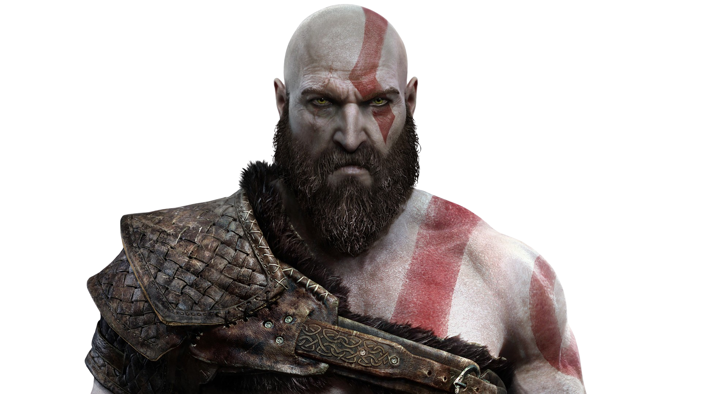

KRATOS
Kratos is a former Greek god of war who seeks to leave his violent past behind. Now living in the world of Norse mythology, he is a father to his son Atreus and struggles to teach him while protecting him from the dangers of their harsh world. Kratos is haunted by his past mistakes, particularly his role in the destruction of the Greek pantheon, and strives to control his rage, though it often resurfaces when faced with threats.